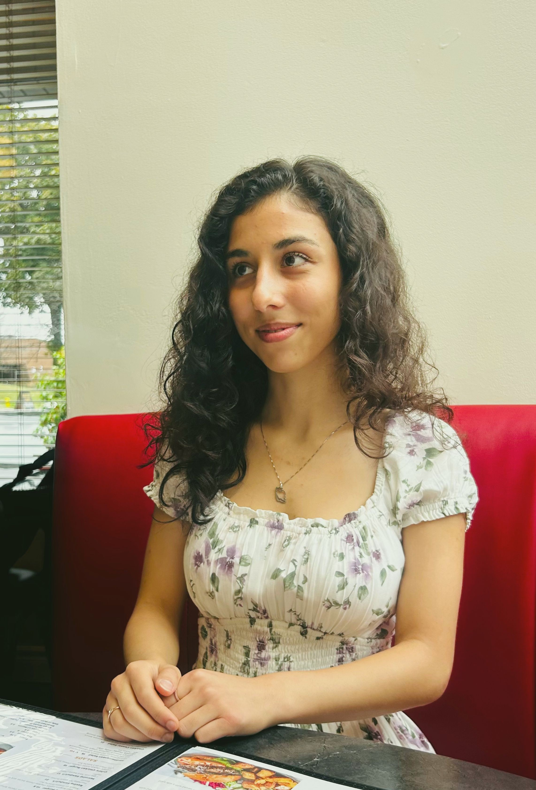
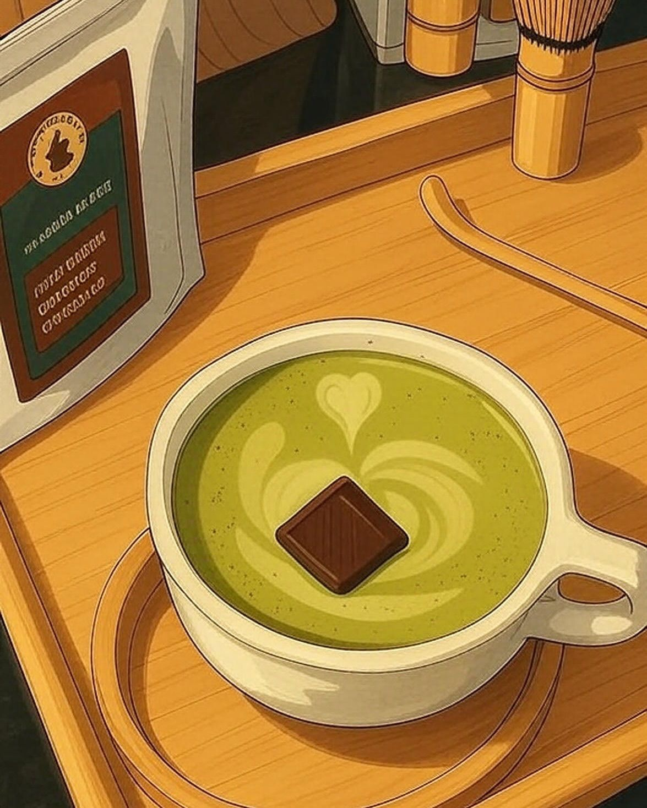

About
Software Engineering @ McMaster · Cloud & Backend
Hi, I’m Parnia Yazdinia!
I’m a Software Engineering student who enjoys turning complicated technical problems into reliable, understandable products. My current work focuses on AWS deployments, backend systems, cloud architecture, and developer tools.
I also serve as Vice President of Development for McMaster’s Google Developer Student Club, where I support student developers and help project teams work effectively. Outside of tech, I enjoy cafés, film photography, time with friends, and Persian poetry.


if you’re reading this, you now share my current vibe 🌙☕